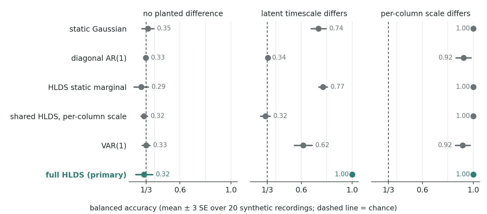

Entry
The first two phases of this project (the first and the redesign) asked whether the latent layers of a hierarchical linear dynamical system (HLDS) carry more condition information than the input they are computed from. No configuration showed a significant gain. Perhaps I was using the model wrong: an HLDS is a generative model, and reading its filtered states as features throws most of it away. So the next phase fit one HLDS per condition on the training trials and labelled a held-out trial by the condition whose model gives it the highest likelihood. The question is whether temporal structure carries condition information beyond what a static per-condition covariance already carries.
The setup
The data are multichannel time-series recordings from a collaborator's dataset, each trial carrying one of three condition labels. The input is the reduced one from the redesign: four spatial components, four frequency bands and 16 lags, standardized per trial, then compressed to 32 columns by a principal-component step fitted on training trials. Because each trial is standardized column by column, its means are zero, so what is left to classify is second order. The input already had a strong second-order result: a probe on per-column log-variance sat 0.081 above its design null on the 14 explore recordings. (The design null is the one from the first post: each draw relabels a recording's trials with another recording's real condition sequence. The 14 explore recordings are one half of a fixed explore/confirm split; the other 13 are held back, and each configuration may use them for at most one confirm run.)
Each per-condition HLDS starts from a pooled, label-free fit and runs exactly 10 iterations of expectation-maximization (EM), under the true labels and under every null relabelling, so the null is exact at that fixed iteration count whether or not EM has converged. Training trials are equalized across the three conditions (median 16 per condition per fold, range 6 to 23). The decision rule is the argmax of the log-likelihood with uniform priors.
Why the controls had to be this specific
"Beats a static model" means little unless the static model is fair. In the earlier fit of this input the observation noise sat at its floor in every fold, so a plain per-sample Gaussian was a weak control. The pre-registration therefore required two comparisons below the full model: the HLDS fits' own static marginal (same models, temporal order discarded) and a per-condition VAR(1), a first-order vector autoregression fitted directly to the input. A static per-condition Gaussian and a diagonal AR(1) (the same autoregression, each column predicted only from its own past) were reported alongside, never gating. VAR(1) was no straw man: on a label-free check on two recordings, a pooled VAR(1) beat the pooled HLDS by about 14 nats per held-out sample. The pooled HLDS fit was also unstable (some diagonal transition coefficients at or above 1; the explore run later showed this in every fold), so it had no stationary marginal. In a dated erratum written before any labelled run, I added a separate stability-bounded fit, and every per-condition HLDS started from it.
Implementing the synthetic gate (a pass-or-fail check on simulated data, described below) turned up a subtler problem, the one I would warn anyone about. In shorter-trial test simulations where conditions differ only in the scale of each column, the full HLDS beat the static Gaussian by 0.18 and 0.32 in balanced accuracy at log-scale differences of 0.05 and 0.03. Nothing dynamic differs there; a correctly specified temporal model is simply a more efficient detector of a covariance difference. So beating the static models could not, on its own, show that the dynamics differ. I added an efficiency-matched control: the shared stable fit, with only a per-condition, per-column output scale matched on the training trials, scored by the same likelihood code. It went in as a fifth required item, in the same erratum.
To pass, the full model had to beat its own null, VAR(1), its static marginal and the scale control, each at p < 0.05, and be no worse on average than the input's log-variance and covariance probes.
Can it find dynamics at all?
Before touching labels, I checked that the classifier finds what it is meant to find, on 20 synthetic recordings simulated from a stable fit at the real dimensions.

With no planted difference, every classifier sat at chance. When only the latent timescale differed, the full HLDS reached 1.00, 0.229 above its own static marginal (the gate needed 0.10) and 0.385 above VAR(1). The scale control stayed at chance, as it should, since it shares the dynamics. The two static models were not at chance in that world either (0.74 and 0.77), so the planted difference leaked partly into the trial covariance, but the full model's margin was clear. When only the per-column scale differed, the full model and the scale control both reached 1.00; the gate used a log-scale difference of ±0.2, large enough that both static models reached 1.00 too. The gate passed. That shows the classifier works when the model is correctly specified, no more, but it does mean a negative on real data cannot be blamed on a classifier blind to dynamics.
The explore result
Every item failed. The full HLDS sat 0.036 above its null (p 0.088). Against VAR(1) it gained 0.007 (p 0.75), against its own static marginal 0.035 (p 0.087), and against the scale control 0.022 (p 0.22). It fell 0.044 below the input's log-variance probe and 0.026 below the covariance probe. The pre-registered rule takes the largest p of the tested items as the p for the whole question, which was the VAR(1) item's 0.75.
The reported-only results, which never counted toward the verdict, suggest why. The static per-condition Gaussian was the best likelihood classifier, 0.046 above null (p 0.04). The full HLDS minus the static Gaussian was −0.009 (p 0.52, 95% interval −0.040 to +0.021), and VAR(1) minus the static Gaussian was −0.016 (p 0.34). Adding dynamics, linear or latent, did not improve on it. The fairest input comparison, the log-variance probe trained on the same equalized trials, still reached 0.055 (p 0.019).
These are explore numbers on 14 recordings, not a confirmation. A confirm run was allowed only if the explore set passed, so none was made. For the record, with the explore effects halved for the winner's curse, a confirm run would have had power 0.02 for the VAR(1) item and about zero for the question as a whole. The 13 confirm recordings were never used.
What I take from it
The likelihood classifiers form a ladder ordered by complexity, and the results do not follow that order. The model with no temporal structure did as well as anything above it, and the interval leaves room for at most a small advantage of the full HLDS over the static Gaussian (about 0.02). On this input, and on the explore set, the condition information I could find lives in static second-order structure, which a covariance or log-variance probe reads directly.
The lesson is about the comparison, not the model. Without the scale control, a positive "dynamics beat statics" result would have been uninterpretable, and I only found that out because the synthetic gate was built before the real run. The other direction of this phase, putting the label inside the model, is in a gate that could not fail for the right reason; the overall project is on the project page.